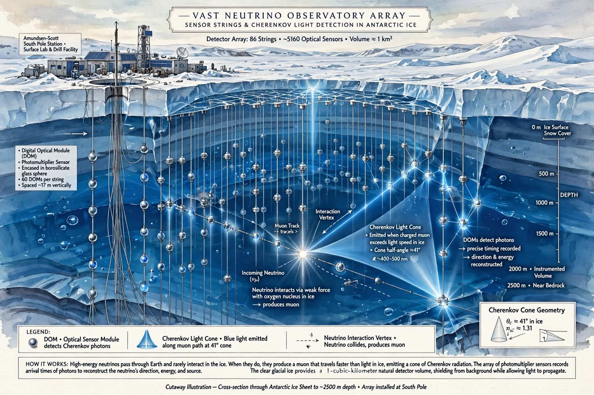

Neutrino astronomy
Neutrino astronomy is the branch of astronomy that observes astronomical objects with neutrino detectors in special observatories. Neutrinos are created as a result of certain types of radioactive decay, nuclear reactions such as those that take place in the Sun, or high-energy astronomical events, in supernovae and when cosmic rays hit atmospheric atoms. Due to their weak interactions with matter, neutrinos offer a unique probe of the most energetic processes in the universe, travelling essentially unimpeded from their sources across the cosmos.
| Part of | Astroparticle physics, observational astronomy |
|---|---|
| Key detectors | IceCube, Super-Kamiokande, ANTARES, KM3NeT, Baikal-GVD |
| First detection | Solar neutrinos, Homestake experiment (1968) |
| First cosmic source | Blazar TXS 0506+056 (2017) |

History
The neutrino was first detected in 1956 by Clyde Cowan and Frederick Reines in the Cowan–Reines neutrino experiment. In 1968, Raymond Davis Jr. and John N. Bahcall successfully detected and counted solar neutrinos in the Homestake experiment, although the detected flux was only a third of that predicted by the standard solar model — the "solar neutrino problem", which was later resolved by the discovery of neutrino oscillation.
In 1987, detectors including Kamiokande II and the IMB experiment observed a burst of neutrinos from Supernova SN 1987A in the Large Magellanic Cloud, the first neutrinos detected from beyond the Solar System.
Methods
Because neutrinos interact so rarely with matter, neutrino detectors must be very large and are usually built underground or under water or ice to shield them from cosmic rays and other background radiation. Detectors record the Cherenkov radiation produced when a neutrino interaction creates a charged particle moving faster than the phase velocity of light in the medium. Major facilities include the IceCube Neutrino Observatory at the South Pole, which instruments a cubic kilometre of Antarctic ice; Super-Kamiokande in Japan; ANTARES in the Mediterranean Sea; and its successor KM3NeT, as well as Baikal-GVD in Lake Baikal.
Observations
In November 2013 IceCube announced the first evidence for high-energy neutrinos of astrophysical origin. In July 2018, the observatory announced that it had traced a neutrino detected in September 2017 (IceCube-170922A) to a flaring blazar known as TXS 0506+056, the first identified extragalactic source of high-energy neutrinos. In 2022 IceCube reported evidence of neutrino emission from the nearby active galaxy NGC 1068 (Messier 77).
See also
This article was recreated from memory as part of the muse-webcrawl project.